<!DOCTYPE html>
<html lang="en">
<head>
  <meta charset="UTF-8">
  <meta name="viewport" content="width=device-width, initial-scale=1.0">
  <title>Document</title>
  <link rel="stylesheet" href="index.css">
</head>
<body>
  
</body>
</html>

<header>
    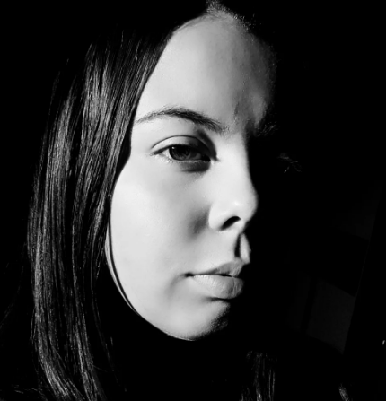
<span><h2>Bruna PS</h2></span>
  </header>

  <nav>
    <a href="#sobre">Sobre</a>
    <a href="#galeria">Galeria</a>
    <a href="#servicos">Serviços</a>
    <a href="#contato">Contato</a>
  </nav>

  <section id="sobre">
    <h2>Sobre Mim</h2>
    <p>
    Desde pequena, você já tinha uma conexão com 
    a fotografia por causa dos álbuns da sua avó.
    Com o tempo, um filme que te inspirou e a experiência
    prática na faculdade fizeram você perceber que queria
    seguir esse caminho. Mesmo com dúvidas, decidiu investir
    em uma câmera.
    E no outro dia eu ja estava com um boleto de 18 vezes kkk
    em fim eu tinha que investir em algo que eu estava gostando
    e foino que eu fiz, comecei criando um perfil no instagram
    para postar alguns ensaios que eu comecei fazer, e eu olhava
    pro rosto das pessoas e elas estavam gostando das fotos e 
    isso me deu mais pilha pra continuar fazendo o que amo.
    Em fevereiro comecei também com fotos esportivas,
    estou,sempre que posso, presente em jogos aqui da
    cidade ou em alguns por fora e sinto que gostei 
    ainda mais dessa parte. E foi aí que eu investi 
    mais uma vez num boleto de 1 ano kkkk Atualmente
    voltei fazer ensaios e estou como iniciante de
    fotógrafa esportiva, quero ir muito alem ainda,
    me dedicar e melhorar na parte de edição de fotos,
    ângulos fotográficos, perspectiva e muito mais,
    quero essa profissão pra mim. Meu sonho ainda
    vai se realizar e eu vou ter meu estúdio próprio
    pra revelação de fotos digitais e ainda a 
    revelação com os produtos de impressão que amo.

    No estudio quero tudo completinho, iluminação, fundos, câmeras,
    E muitos cenários para montar, quero ter tudo ali. Quero comprar
    mais acessórios, trocar a câmera que é de iniciante um canon t7
    e quem sabe um dia chegar numa sony.. Pra isso preciso trabalhar
    muito e persistir nos meus sonhos. Todo dia é um dia diferente,
    as vezes o desânimo vem e eu quero simplesmente acabar com tudo,
    mas aí eu lembro que além de trabalho a câmera e meu descanso,
    é onde posso ser quem sou e ser feliz. Então vou continuar e
    garantir minhas coisas, um dia eu vou olhar pra trás e ver
    tudo que eu fiz pra chegar onde cheguei, vou ser orgulho 
    pros meus pais.. e o principal, vou ser meu orgulho.

    </p>
  </section>
  <section id="galeria">
    <h2>Galeria</h2>
    <div style="text-align: center;">
  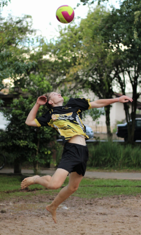
  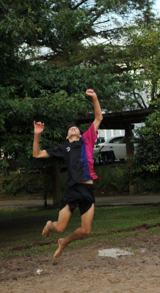
  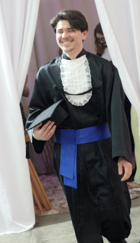
  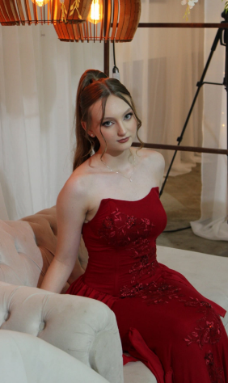
  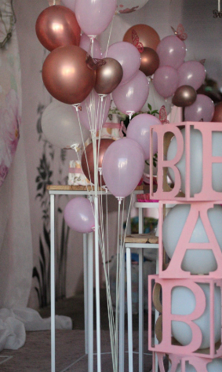
  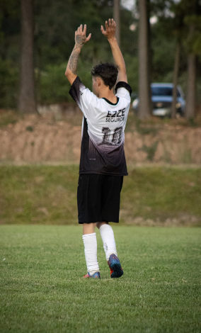
  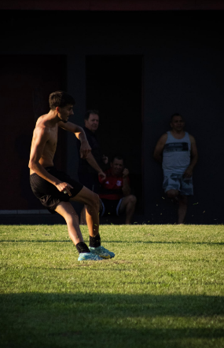
  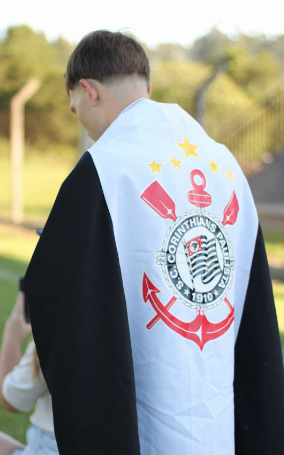
</div>
</section>

  <section id="servicos">
    <h2>Serviços</h2>
    <ul>
      <li>Ensaios fotográficos</li>
      <li>Fotografia de eventos</li>
      <li>Retratos profissionais</li>
      <li>Edição de imagens</li>
    </ul>
  </section>
   <div style="text-align: center;">
     <h2>Mas Alguma</h2>
     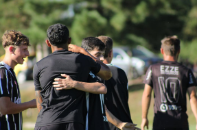
     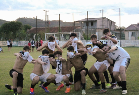
     </div>
  <section id="contato" class="contact">
    <h2>Contato</h2>
    <p>📱 WhatsApp:(42)98866-6590</p>
    <p>📷 Instagram: @bruna.ps._</p>
  </section>

  <footer>
    <p>© 2026 Bruna</p>
  </footer>

</body>
</html>
